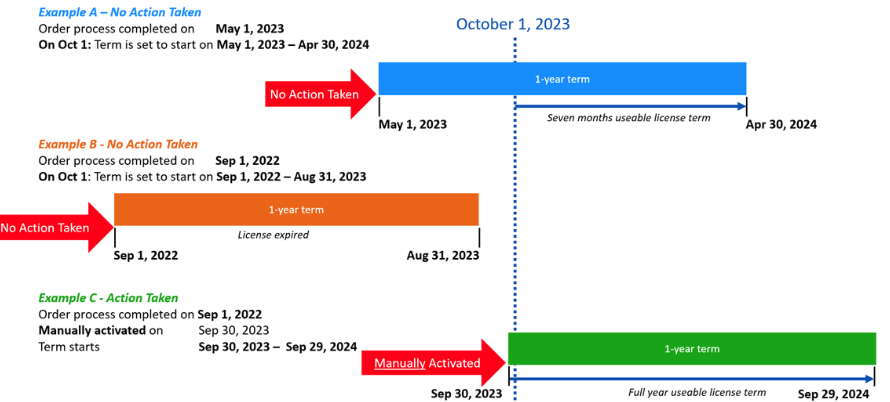
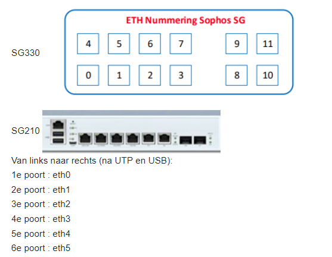
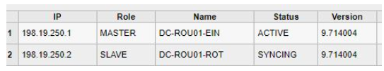
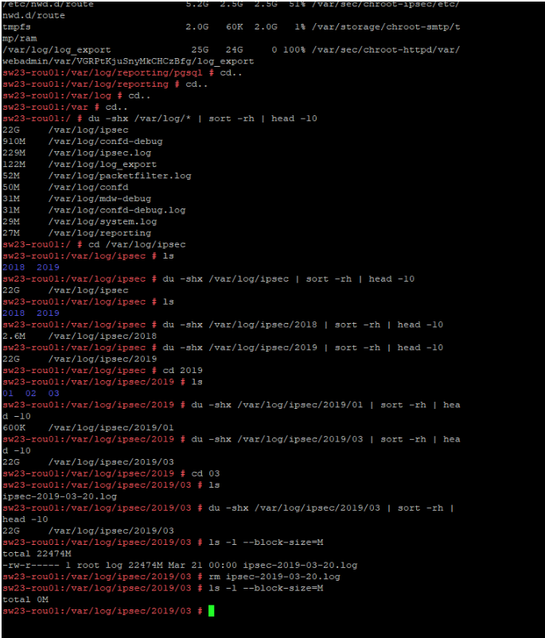
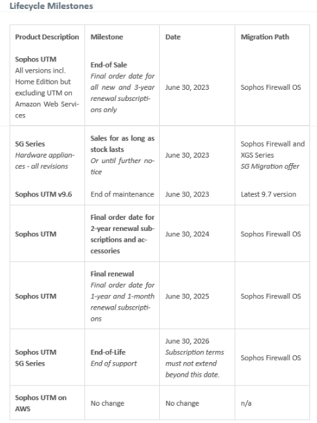

Sophos Algemeen
Sophos Routers Configureren
"S:\8.0 Automatisering\2.1 Netwerk\Technisch ontwerp Vernieuwing infrastructuur.docx"
Sophos Licensing
Zie de inloggegevens in MontaPassword voor MyUTM Account https://myutm.sophos.com/homepage.php (Licentie).
Met ingang van 1 oktober 2023 gaat de looptijd van nieuwe licenties in op de datum waarop de bestelling door Sophos wordt verwerkt, ongeacht wanneer de eindgebruiker de licentie activeert.

Upgrade or renew a license If you need to update or renew an existing license or we’ve only sent you UPG-XXXXXXXX keys (deze key staat in een pdf die Netstream opstuurt):
- Go to https://myutm.sophos.com and sign in.
- In MyUTM, click License Management.
- Click the license you want to update. Click Apply Upgrade Key and enter a key. Repeat if you have more keys for that license.
- Click Download License File and save the file.
- Upload the license file to your UTM appliance. In WebAdmin, go to Management > Licensing and select the Installation tab
Sophos SG ETH-nummering

Sophos HA inrichting
De Sophos in Eindhoven en in Rotterdam zijn ingericht als een Master-Slave combinatie.
Hiervoor is High Availability ingericht. Eth3 is hiervoor via switches - interconnect in gebruik.
Bij uitval van de switch waarop eth3 is aangesloten zal er een split brain ontstaan.
Om de kans hierop te verkleinen is er een backupHA aangesloten via eth7.
Dit werkt niet helemmaal naar wens maar het is beter dan zonder : Als primaire HA wegvalt gaat Rotterdam dood ,maar er komt geen split brain.
Je moet echter naar Rotterdam om de slave weer aan te zetten.
Verder staan er in de HA log altijd foutmeldingen in de trant van "Lost heartbeat message from node 2! Expected 2127015 but got 2127014"
Er is heel veel tijd besteed aan het oplossen maar dit is niet gelukt, het lijkt verder geen nadelen te hebben.
Onder water worden onderstaande IP-nr's gebruikt.

Sophos SSH
Aanzetten bij management \ system settings \ Shell Access.
Wachtwoord zetten of uit MontaPassword halen.
Via Putty verbinding maken met bijv. 172.16.0.1 via standaard poort.
Login met "loginuser" en wachtwoord plakken (rechtermuisknop en dan enter).
su
Zelfde wachtwoord plakken, hierna ben je ingelogd als root.
Verkeer analyseren
commando's:
iftop -i eth1 (of lag0, in ieder geval de interface die je wilt bekijken) = verkeer van alle clients.
iftop -i eth1 -f "dst host 172.27.5.71" = verkeer van specifieke client.
top = Info over processen die op de router draaien.
xxxxxx =
TX and RX are abbreviations for Transmit and Receive, respectively.
Note that these metrics are referenced to the server being monitored; Transmit FROM this server, and Receive TO this server.
Units are in Bytes (not bits).
Als je de LAN-interface bekijkt is TX vanaf de Sophos naar de clients in het netwerk (dus download) en RX van de clients naar de Sophos (dus upload).
Bekijk je de internet-interface dan is het precies andersom. TX vanaf de Sophos naar internet (dus upload) en RX van internet naar de Sophos (dus download).
Logdisk opschonen
Via de webinterface is op het Dashboard te zien welk deel van de Log Disk in gebruik is.
Bij "Logging & Reporting \ View Log files" kun je logfiles bekijken en weggooien. Het is alleen lastig om hier het overzicht te krijgen.
Door met putty in te loggen op de Sophos is dat verder te analyseren.
commando's:
cd.. tot terug naar root.
du -shx /var/log/* | sort -rh | head -10
Dit levert de subdirectories op met de grootte.
Ga met bijv cd /var/log/ipsec naar de gewenste directory.
ls voor inhoud van de directory.
Met het commando ls -l --block-size=M kan de inhoud van een directory bekeken worden.
Met het commando rm kan een file verrwijderd worden, bijv rm ipsec-2019-03-20.log.

Macadress achterhalen a.d.h.v. IP-nummer.
arp -a | grep x.x.x.x
Log in op de router: https://172.xx.4.1:444 (xx is subnet van locatie). Via "Logging \ Network usage \ Bandwith usage" kan het IP-nr opgespoord worden wat veel dataverkeer veroorzaakt. Via "Network services \ DHCP \ IPv4 Lease Table" kan het IP-nr aan een PC gekoppeld worden , of via de IP-lijst als het een vast IP-nr betreft. In MAX Focus kan via View \ Asset Tracking het PC-nr gezocht worden a.d.h.v het IP-nr. In het hoofdscherm van MAX Focus is de omschrijving van de PC te zien. Vaak is de PC aan het updaten. Via "interfaces & Routing \ QoS" kan per interface de toegestane bandbreedte ingesteld worden, voor 25-Gast is dit nu 8 Mbit/sec.
Netwerk belasting analyseren
Log in op de router: https://172.xx.4.1:444 (xx is subnet van locatie).
Via "Logging \ Network usage \ Bandwith usage" kan het IP-nr opgespoord worden wat veel dataverkeer veroorzaakt.
Via "Network services \ DHCP \ IPv4 Lease Table" kan het IP-nr aan een PC gekoppeld worden , of via de IP-lijst als het een vast IP-nr betreft.
In MAX Focus kan via View \ Asset Tracking het PC-nr gezocht worden a.d.h.v het IP-nr.
In het hoofdscherm van MAX Focus is de omschrijving van de PC te zien. Vaak is de PC aan het updaten.
Via "interfaces & Routing \ QoS" kan per interface de toegestane bandbreedte ingesteld worden, voor 25-Gast is dit nu 8 Mbit/sec.
Kleurcodering firewall logs
Red: The packet was dropped.
Yellow: The packet was rejected.
Green: The packet was allowed.
Gray: The action could not be determined.
White: NAT-rules.
Sophos EOL
Voor Monta betekent onderstaande dat na 30-6-2026 de huidige Sophos Firewalls niet meer te gebruiken zijn.
